哈尔滨工业大学（深圳）本科生 · AI 应用开发实习 · 深圳
01 / About me
我是徐俊杰，目前在哈尔滨工业大学（深圳）就读，主要使用 Java 和 Python 开发后端，正在围绕具体业务实践 Agent、RAG 和 AI 辅助开发。
从校园二手交易中的智能导购，到为记忆研究搭建数据采集平台，我喜欢把想法做成可以实际体验的应用。除了功能本身，我也关心模型的回答有没有依据、业务数据是否一致，以及应用上线后能否继续维护。
class JunjieXu:
location = "Shenzhen, China"
education = "HIT Shenzhen · Undergraduate · 2024–2028"
backend = ["Java", "Spring Boot", "Python", "FastAPI"]
focus = ["Agents", "RAG", "Evaluation", "Application delivery"]
building = ["Sharing Market", "Verbal Memory"]
open_to = "AI Application Development Internships"
def development_loop(self):
return "Understand → Build → Verify → Deploy → Iterate"
- 后端基础： 业务接口、订单与库存、余额一致性、并发会话及调用额度。
- AI 应用实践： 结构化路由、受控工具调用、检索增强、引用校验与会话管理。
- 验证习惯： 通过接口联调、实际运行、代码审查和失败案例分析迭代实现。
02 / Selected work
智能校园二手交易平台
校园交易业务 × AI 导购
用户可以用自然语言描述购买需求，查询真实在售商品，并结合平台规则、课程资料和社区经验获取带来源引用的购买建议。平台同时覆盖商品发布、订单交易、校园币模拟支付、帖子互动和私信等业务。
- 业务与 Agent 协作： Spring Boot 管理业务数据和会话，FastAPI 编排模型；通过 Tool Calling 接入商品搜索和脱敏偏好工具。
- 路由与证据： 实现规则 Guardrail、结构化 LLM Router、失败降级、FAISS 检索和服务端引用校验。
- 知识与评测： 构建 359 篇文档 / 1,611 个片段的知识库和 200 条人工复核 Case，通过回归评测定位路由、检索与回答边界问题。
- 工程细节： 处理库存条件扣减、幂等流水、并发会话、滚动摘要、Tool Trace 和用户/平台双层调用额度。
Java Python Spring Boot FastAPI MySQL Redis Vue FAISS
Verbal Memory 测试平台
研究需求 × AI 辅助全栈交付
面向音乐条件与英语单词短时记忆研究的数据采集平台，支持音乐/无音乐条件测试、实验记录管理与 CSV 导出。
- 实验流程： 完成被试信息填写、实验准备、NEW/SEEN 单词判别和结果提交，采集分数、完成时长及音乐习惯信息。
- 全栈实现： 基于 React、TypeScript、Spring Boot 与 MySQL 完成页面、接口和数据存储；使用 Codex、Claude Code 辅助开发，通过实际运行、联调和人工审查验证代码。
- 部署与交付： 后端镜像本地构建，通过 Docker Compose 在阿里云 ECS 部署后端和 MySQL，使用数据卷持久化。
- 访问与更新： Cloudflare Tunnel 提供后端 HTTPS 访问，前端通过 Cloudflare Pages 实现 Git 推送触发自动构建部署。
React TypeScript Spring Boot MySQL Docker Compose Cloudflare
AircraftGame
基于 Java Swing 的飞机大战，包含三档难度、Boss 战、多种敌机与道具，以及排行榜持久化。
在游戏循环、射击方式和对象创建中实践面向对象设计与设计模式。
Java Swing OOP
03 / Technologies & practice
以下来自项目中的实际使用；后端是主要方向，前端侧重页面实现、代码阅读和接口联调。
| 方向 | 技术与实践 |
|---|---|
| 后端开发 | Java · Python · Spring Boot · FastAPI · MyBatis-Plus |
| AI 应用 | Responses API · Structured Outputs · Tool Calling · RAG · Embeddings · FAISS |
| 数据与状态 | MySQL · Redis · 幂等处理 · 会话持久化 |
| 前端实践 | React · Vue · TypeScript · Vite |
| 部署与交付 | Docker Compose · 阿里云 ECS · Cloudflare Pages / Tunnel |
| 开发与验证 | Git · Linux 常用命令 · Apifox · 代码审查 · 回归评测 |
| AI 编码工具 | Codex · Claude Code |
04 / What I'm exploring
Agent 如何接入真实业务？ 让模型负责语义判断，程序控制工具策略和执行边界，并对商品、帖子与引用结果进行校验。
RAG 的问题究竟出在哪一环？ 结合课程关系、候选证据和失败案例，区分路由、检索、标注与生成问题，再通过固定评测集回归验证。
如何把 AI 辅助编码变成可维护的交付？ 在需求拆解、编码与调试中使用 AI 工具，同时保留代码阅读、接口联调、实际运行和部署验证。
05 / Achievements
- 国家级三等奖 · 2025 年度“挑战杯”中国青年科技创新“揭榜挂帅”擂台赛。
- 省级二等奖 · 2025 年第十七届全国大学生数学竞赛。
- 优秀学生、学业三等奖学金 · 哈尔滨工业大学（深圳），2024—2025 学年。
- 优秀团员 · 哈尔滨工业大学（深圳），2025—2026 学年五四表彰。
06 / A little motion, a little progress
Contribution snake
07 / Let's connect
目前寻找 AI 应用开发实习机会（深圳），欢迎通过邮件联系。